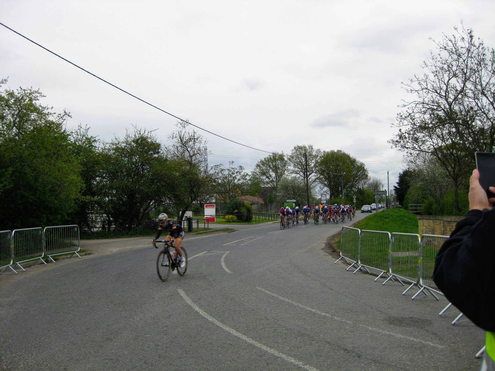
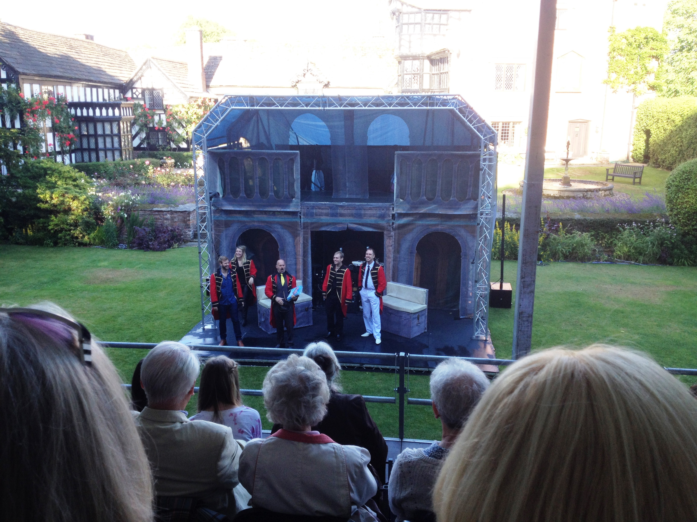
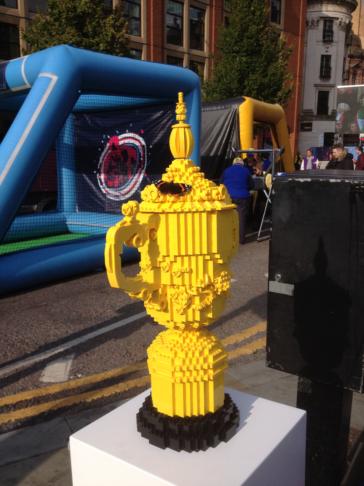

2015
May 2015
The Grand Depart in 2014 was such a success, the organisers decided to go ahead with a Tour de Yorkshire in 2015, and I just had to volunteer for that. First of all we had to go through a training session at the West Yorkshire Police headquarters, just off the M1 near Wakefield. We had to show photo id to get into the building, and were warned that helicopters might be landing, and blue flashing lights dashing past. The vast majority of the attendees had been volunteers in 2014. The police guys were very funny and made the training, which was the usual stuff about how to deal with crowds, entertaining. I was assigned to Day Two of the race, which had both men and women racing. The women were just doing the finishing circuit around York five times. The men's stage started in Selby and ended in York, doing the finishing circuit twice. Unlike the Tour proper, they were not closing the roads for the whole day, except on the finishing circuit. All the volunteers assigned to the York finishing circuit had to report in at York racecourse. We had no uniform per se, but we had been given left over Tour de France stuff, so a lot of us were wearing Tour de France hoodies. After spending ages sitting around, we were put on buses to be taken out to our assigned spots. Our lot, who were going to Osbaldwick, were last off the bus.
{kind=link}
I was allocated a corner on the way into the village, which was at a T junction with the link road onto a main road into York. I had to deal with everyone driving up the link road, telling them that they couldn't even cross the road for the rest of the day. One of the Flag and Whistle marshalls was already in place, as the kink in the road was quite dangerous at speed. The Women's race came through first. Then we had a bit of a break before the men came through.
A week later, and Mum and I were off to Tenerife for a week's holiday. As usual we were staying up at Hotel Botanico & Oriental Spa in Puerto de la Cruz. This time our room was on the inside of the hotel overlooking the swimming pool. A lovely week doing nothing but eating and drinking, with someone else cooking.
Once home, I took a Sunday trip over to the West Kirby Marine Lake and Beach. The Marine Lake is a man-made saltwater lake, 52 acres in size, 5 foot deep and totally enclosed. The beach was miles from the actual sea.
June 2015
I decided to do a bit of a history trip so I could do a People & Places track for the Talking Newspaper. First stop Flint Castle. This was the first castle to be founded as part of Edward I's campaign against Llywelyn ap Gruffydd. It is also the location of a fateful meeting in 1399 between Richard II and his rival to the crown Henry Bolingbroke (later Henry IV), an event immortalised in Shakespeare's Richard II. Next was Rhuddlan Castle. Built to use a river to receive supplies, the River Clwyd didn't meander in quite the right place, so Edwatd I conscripted hundreds of ditch-diggers to deepen and divert its course. Denbigh Castle was once the royal residence of Dafydd ap Gruffudd, whose attack on nearby Hawarden Castle provoked the English king Edward I to mount a full-scale invasion. It has a fabulous gatehouse. Back across the border to Beeston Castle, one of the most dramatically sited medieval castles in England.
{kind=link}
July 2015
Outdoor Theatre time, at the summer theatre created at Gawsworth Hall, with the Oddsocks Touring Company,, who were doing Twelfth Night. The initial showers didn't put off the stalwart British picnicers. I was nice and dry underneath a big tree, but eventually the sun came out.August 2015
Another new event for me. The English National Sheepdog Trials, taking place just outside Macclesfield on the Leek Road. There were craft tents with painters, knitters and spinners, rare farm breeds, a tent selling local produce including the Wincle brewery and the Cheshire Cheese Company (I bought both beer and cheese), and working sheepdogs, both singles and doubles.September 2015
The Rugby World Cup had arrived in England. Wales were playing their matches in Cardiff and I got a ticket to see them play Uruguay. The atmosphere on match day was as good as always, and lots of people were taking selfies with the art installation of the ball embedded in the castle wall. The Cardiff Arms Park pitch had been turned into a fan zone. I enjoyed the match, but as I was on the end of a row, I spent a lot of time letting guys in and out to get drinks and let previous ones out.October 2015
The Macclesfield Eye Society were manning a water station for the Macclesfield Half Marathon, so I decided to volunteer to help. The station was located on Whirley Lane, at the 11 mile mark, at the top of quite a steep hill. The big house we were next to allowed us to use their external tap to refill our water containers, and made us cups of tea/coffee. It was a very pleasant exprience. Almost every runner that took a drink gave us very grateful thanks.The following weekend was the Manchester weekend for the Rugby World Cup. England's final match qualifying match had been scheduled to be played at the Ethiad Stadium, as a celebration to spread the rugby word up north. Unfortunately, they had lost to both Australia, and of course, Wales, so the match was a dead rubber. The official World Cup volunteers were only working on the Saturday that England were playing. They were lining the walking route to the stadium from the City Centre, or welcoming people to the stadium.
I was part of a separate group that had been loaned to Manchester City Council to help them man a weekend long Fan zone in Albert Square. There was a stage on which the MC introduced various celebrities and local groups, two big screens to watch the matches, stalls and bars to get food and drink, and a number of rugby related activities which we volunteers were manning. We were given exactly the same kit as the official volunteers, apart from the official accreditation. It must have cost a fortune, but had no sponsors logos, only the IRB official RWC logo. A polo shirt, a rugby shirt, a fleece, a pair of trousers and a really good waterproof coat, socks and shoes, and a vile bright yellow baseball cap.
Our activities comprised a Speed Pass and Precision Pass booth, plus a Bungee Run. The first booth had a speed gun set up to measure how hard and fast a rugby ball was being passed. The second had a number of holes in the back, of differing sizes, and the idea was to pass a rugby ball three times through the holes, the smaller the hole, the more points scored. Our job was to collect the balls once used. Although they were only three quarter size, they were quite big for my litle hands, and my hands were aching after manning the booths. The Bungee Run had bungee ropes attached to belts, and participants had to run down the inflatable and dive to score the first try. Our job was to put on and take off the belts.
 On the Friday, during the day there were no matches, and our visitors were mostly parties of school children, who obviously enjoyed the Bungee Run. I did not envy the accompanying teachers. There was one evening match. New Zealand played Tonga. Pre match, a New Zealand group did the Haka, whilst some Tongans did their equivalent, the Sipi Tau. A lot of guys came to watch the match after work, and after doing the Bungee Run had torn their very expensive shirts or suit trousers.
{kind=link}
On the Saturday, there were three matches, Samoa v Scotland, Wales v Australia and England v Uruguay. The "official volunteers" arrived before the England match, and one of the supervisors started telling our lotwhat to do. We politely told him, we had our own supervisor, Craig from the Council, so "Go away". We were pleased to note that we had vouchers to get hot food from some of the stalls, and access to the Town Hall to eat on our break, whilst the official lot only had sandwiches, crisps and fruit. The actual Rugby World Cup was also on site, so people could have their photos taken with it.
Sunday saw matches between Argentina v Namibia, Italy v Romania and United States v Japan, for which the crowds were very small, plus France v Ireland (NI Dave was obviously excited by that), which was packed out, although the Irish were drinking in the local pubs where they could get Guinness rather than the fan zone, where they couldn't pre match. A lot of the Irish lasses going on the Bungee run seemed to not be wearing any knickers. I was given an additional task - guarding the Lego replica World Cup. It stayed in one piece all day, until the lass tasked with taking it back to Twickers picked it up and one of the handles came off. being Lego it was easy to stick it back on. At the end of the day, we were invited on stage to pose behind the RWC2015 sign, and Craig told me about the MCRVIP website I could sign up to for future opportunities locally.
Mum and I had a second trip to Tenerife and the Hotel Botanico & Oriental Spa. Our room was again on the side of the Hotel, overlooking the Spa Gardens, and the Spa. Our favourite restaurant, with the very chatty (in Spanish), was frequented on most nights. Mum is not got at doing a selfie. As ever, we didn't go anywhere (except the Mall to get wine from the Supermarket), and didn't do anything except eat and drink.